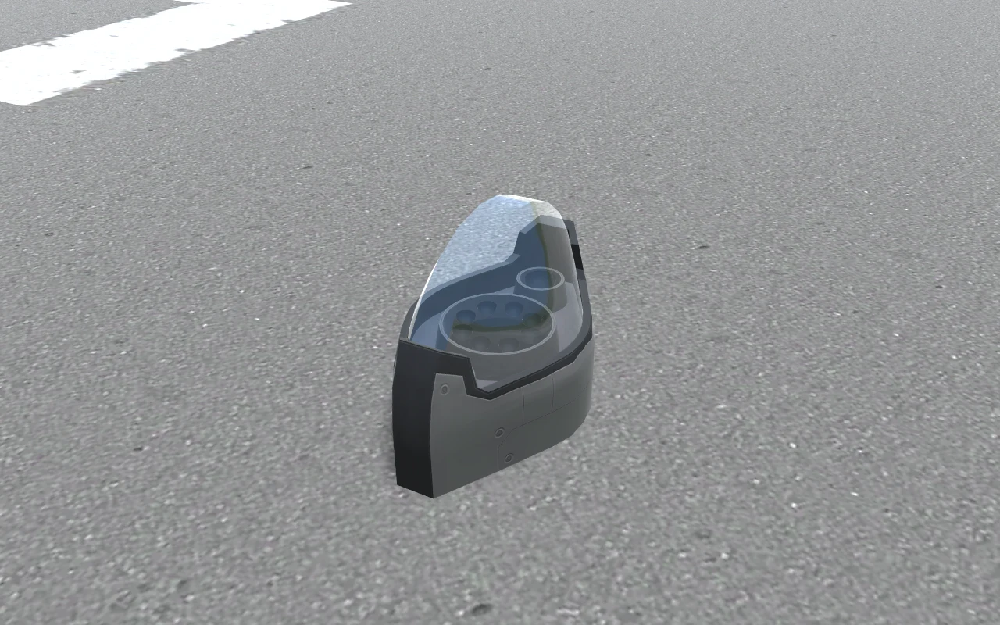
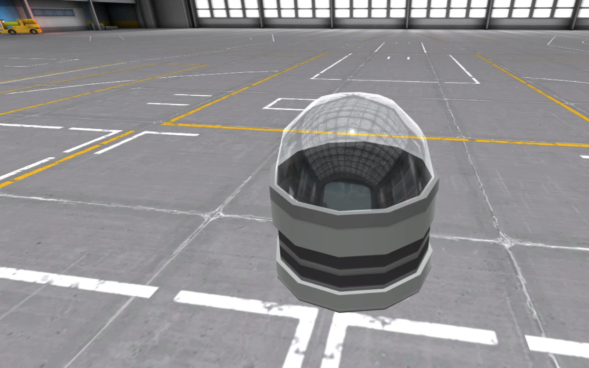
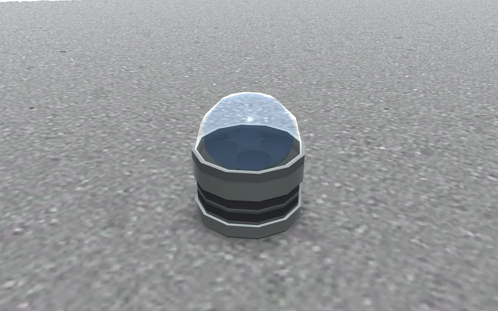
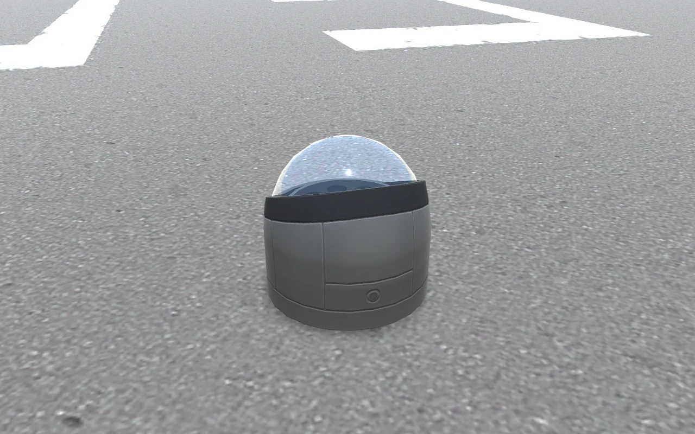
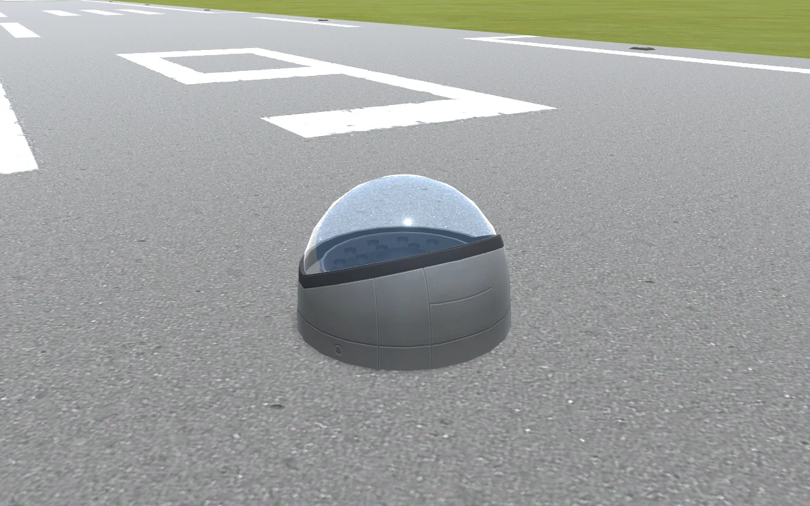
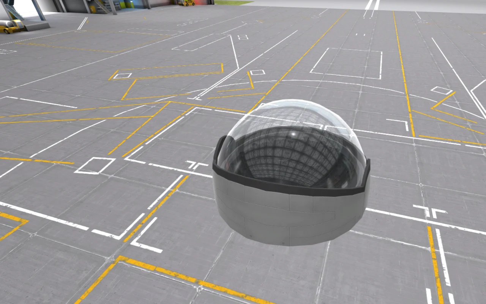
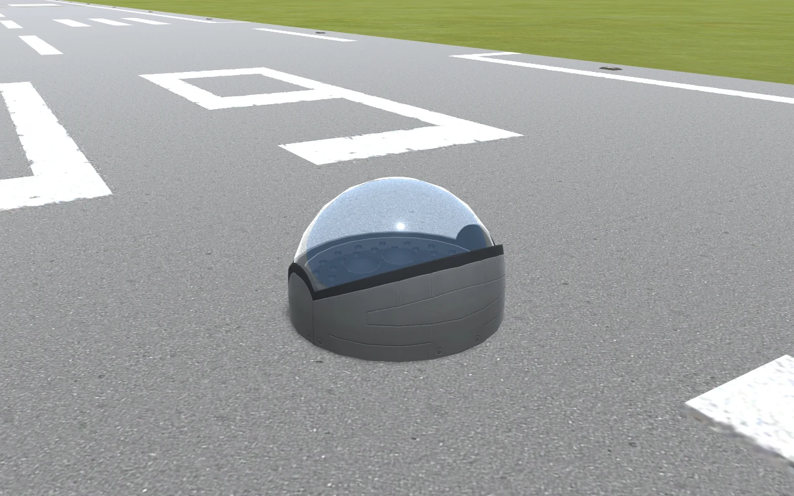

ShineFix home
← Back to supported mods
Impulse Party
Optics verified
Human tested
Version 0.6.1
Compatibility evidence
Original screenshot gallery
Parts
DS Urlum Particle Collector Mk2

DS Urlum Particle Collector S0


DS Urlum Particle Collector S1

DS Urlum Particle Collector S2

DS Urlum Particle Collector S3

